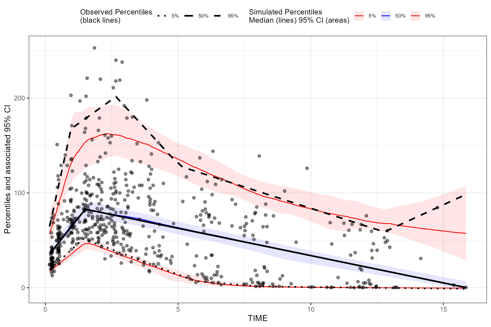
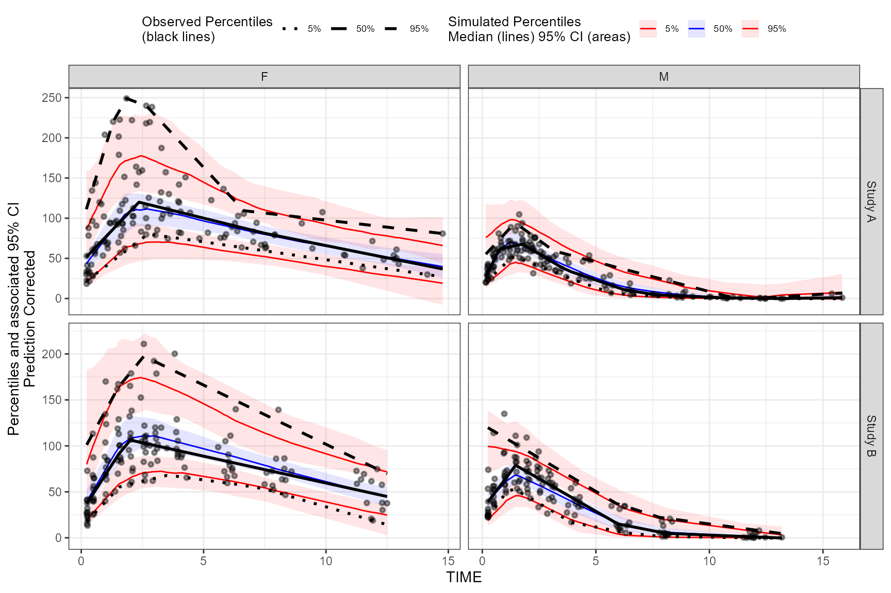
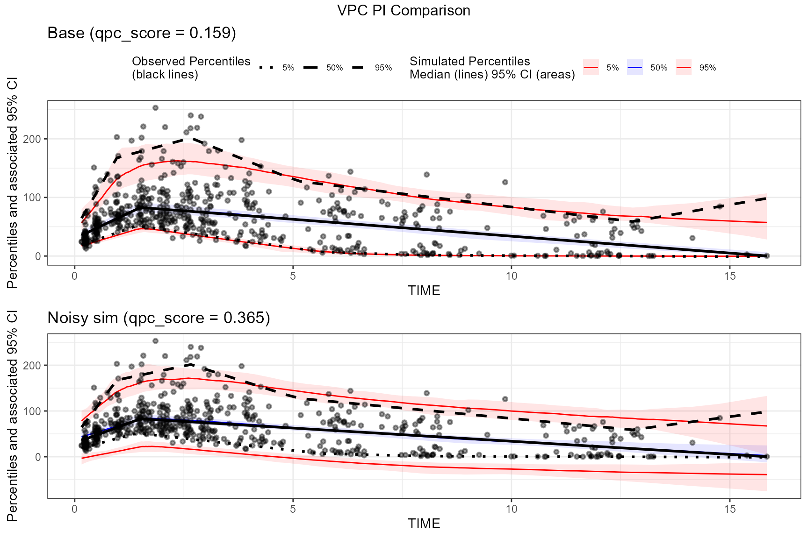

Quantitative Predictive Check (QPC) scoring for VPC
Source:vignettes/tidyvpc_qpc.Rmd
tidyvpc_qpc.RmdIntroduction
A Visual Predictive Check (VPC) is typically assessed visually by checking:
- calibration (are observations inside simulated prediction intervals?)
- bias and trend (does the model systematically miss in certain x regions?)
- sharpness (are prediction intervals unnecessarily wide?)
The Quantitative Predictive Check (QPC) score in
tidyvpc is a numeric summary of these features,
computed from an existing tidyvpcobj after
vpcstats().
QPC produces a table qpc.stats and a composite scalar
qpc_score (lower is
better) that can be used for automated model comparison and
optimization.
What QPC measures (methodology overview)
QPC is computed from o$stats (the
data.table produced by vpcstats()), which
contains (for continuous VPCs) curve points across quantiles:
-
qname: quantile curve (e.g.q0.05,q0.5,q0.95) -
y: observed curve value at x -
md: simulated median curve at x -
lo,hi: simulated confidence interval bounds at x for that quantile curve
At each curve point, QPC derives:
- Coverage: whether
- Deviation: relative to PI half-width
- Drift: Spearman correlation of residuals versus x (monotonic bias)
- Sharpness: interval width (penalizes “variance inflation”)
- Proper interval score (Winkler): rewards narrow intervals but penalizes misses
These are aggregated across curves and combined into
qpc_score with user-controlled weights.
Penalties (what is printed)
qpcstats() prints a scalar qpc_score plus a
component breakdown. Each component is designed to be 0 =
best and larger values = worse.
At a high level:
- Coverage penalties measure calibration (are observed curves inside simulated uncertainty bands?).
- MAE and drift penalties measure agreement and bias structure (how far and whether the residuals trend with x).
- Sharpness and interval penalties discourage “variance inflation” (overly wide bands that can artificially increase coverage).
More concretely (continuous VPC):
Median coverage penalty (
coverage_penalty_med): computed from the median quantile curve (the curve closest to ): Lower is better; 0 means the observed median curve is always inside the simulated band.Tail coverage penalty (
coverage_penalty_tails): computed from the lowest and highest quantile curves available (typically and ), averaged:MAE penalty (
mae_penalty_all): based on deviation scaled by PI half-width: then bounded to and averaged across curves. This highlights “large misses relative to the model’s own uncertainty”.Drift penalty (
rho_penalty_all): absolute Spearman correlation of residuals vs x (averaged across curves), bounded to . Values near 0 indicate no monotonic bias trend across x; larger values indicate systematic drift.Sharpness penalty (
sharpness_penalty): penalizes wide bands using relative width: By default (single-VPC scoring), this is mapped to with a bounded transform: Optionally, you can anchor this withsharp_reffor cross-model comparability.Interval penalty (
interval_penalty): based on the Winkler interval score for nominal PI level : $$ IS = (hi-lo) + \\frac{2}{\\alpha}(lo-y)\\mathbf{1}[y<lo] + \\frac{2}{\\alpha}(y-hi)\\mathbf{1}[y>hi] $$ This rewards narrow intervals but strongly penalizes misses. By default we apply a bounded transform to a normalized score; optionally you can anchor withinterval_ref.
Finally:
where w is the named weight vector
(med_cov, tail_cov, mae,
drift, sharp, interval).
Data
We’ll use the built-in tidyvpc::obs_data and
tidyvpc::sim_data and follow the standard preprocessing
used throughout our vignettes.
obs_data <- as.data.table(tidyvpc::obs_data)
sim_data <- as.data.table(tidyvpc::sim_data)
obs_data <- obs_data[MDV == 0]
sim_data <- sim_data[MDV == 0]Add the population prediction PRED (from replicate 1)
into the observed data for pcVPC examples:
obs_data$PRED <- sim_data[REP == 1, PRED]Example 1: Basic QPC scoring
Below is a standard continuous VPC using binless VPC stats. The QPC
computation is a post-processing step after vpcstats().
vpc <- observed(obs_data, x = TIME, y = DV) %>%
simulated(sim_data, y = DV) %>%
binless() %>%
vpcstats()
vpc <- qpcstats(vpc)
print(vpc)
#> VPC with 100 replicates
#> Stratified by:
#> QPC: qpc_score = 0.159 (lower is better)
#> Breakdown (0 = best):
#> median coverage penalty 0.000
#> tail coverage penalty 0.092
#> MAE penalty 0.221
#> drift penalty 0.409
#> sharpness penalty 0.272
#> interval penalty 0.391
#>
#> x qname y md lo hi
#> <num> <fctr> <num> <num> <num> <num>
#> 1: 0.2157624 q0.05 20.27050 18.70099 15.46726 22.76529
#> 2: 0.4694366 q0.05 26.85172 24.20164 20.90806 28.69981
#> 3: 0.8271844 q0.05 36.13299 32.25889 27.80422 37.28306
#> 4: 1.7724895 q0.05 47.97810 45.68455 39.37618 51.15900
#> 5: 1.7142415 q0.05 48.59415 46.13059 39.92622 51.83491
#> ---
#> 1646: 3.1146520 q0.95 187.64868 157.66057 135.21747 185.70608
#> 1647: 3.9526689 q0.95 162.26683 149.76519 128.25975 168.88196
#> 1648: 6.0247591 q0.95 119.55945 122.36560 105.29532 140.59213
#> 1649: 7.7967326 q0.95 103.60993 101.08928 88.41343 115.52899
#> 1650: 12.2981243 q0.95 63.09294 69.37852 61.51805 85.95328The composite score is available in qpc.stats$qpc_score
(for stratified VPCs you will also see an
qpc_scope == "overall" row).
Plot the VPC:
plot(vpc)
Example 2: QPC with prediction correction and stratification
QPC relies on vpc$stats, so it naturally works with
prediction correction and stratification (for continuous VPCs).
vpc_pc_strat <- observed(obs_data, x = TIME, y = DV) %>%
simulated(sim_data, y = DV) %>%
stratify(STUDY ~ GENDER) %>%
predcorrect(pred = PRED) %>%
binless() %>%
vpcstats()
vpc_pc_strat <- qpcstats(vpc_pc_strat)
print(vpc_pc_strat)
#> Prediction corrected VPC with 100 replicates
#> Stratified by: STUDY, GENDER
#> QPC: qpc_score = 0.148 (lower is better)
#> Breakdown (0 = best):
#> median coverage penalty 0.009
#> tail coverage penalty 0.037
#> MAE penalty 0.201
#> drift penalty 0.078
#> sharpness penalty 0.453
#> interval penalty 0.542
#>
#> QPC qpc_score by stratum:
#> STUDY GENDER qpc_score qpc_scope
#> <char> <char> <num> <char>
#> 1: Study A F 0.2185022 stratum
#> 2: Study B F 0.1143301 stratum
#> 3: Study A M 0.1760193 stratum
#> 4: Study B M 0.1995141 stratum
#> 5: __ALL__ __ALL__ 0.1481005 overall
#> x qname STUDY GENDER y md lo hi
#> <num> <fctr> <char> <char> <num> <num> <num> <num>
#> 1: 0.2414537 q0.05 Study A F 22.628106 21.603303 14.635225 29.01338
#> 2: 0.6153070 q0.05 Study A F 31.298883 31.217977 22.157131 43.88344
#> 3: 0.7493947 q0.05 Study A F 34.408780 34.786598 25.021506 49.07117
#> 4: 1.6711424 q0.05 Study A F 55.786869 59.999193 39.790871 82.52384
#> 5: 2.2418821 q0.05 Study A F 69.024031 66.798270 45.272725 93.57229
#> ---
#> 1646: 2.9649190 q0.95 Study B M 80.150799 75.984410 61.464186 97.94624
#> 1647: 4.2881855 q0.95 Study B M 60.858937 58.079728 43.476314 75.06576
#> 1648: 6.0457983 q0.95 Study B M 36.202388 34.662559 21.504472 51.58254
#> 1649: 7.9075620 q0.95 Study B M 21.905414 20.454721 11.120393 34.17353
#> 1650: 12.0612380 q0.95 Study B M 8.275706 6.636687 2.630895 14.68703Plot the stratified pcVPC:
plot(vpc_pc_strat)
Interpreting differences between vpc and
vpc_pc_strat
In the vignette examples you printed:
- The prediction-corrected + stratified VPC
(
vpc_pc_strat) shows a lower drift penalty (residuals trend less with x), because prediction correction and stratification often remove structured bias that would otherwise appear as monotonic drift. - At the same time,
vpc_pc_stratcan show higher sharpness/interval penalties if the simulated uncertainty bands are wider within strata (or if prediction correction changes the scale/structure of residuals), because QPC explicitly penalizes overly wide intervals even when they improve coverage. - The per-stratum qpc_score table helps localize
which subpopulations drive the overall score: strata with worse
calibration (coverage penalties) or wider uncertainty
(sharpness/interval penalties) will typically have higher
qpc_score.
Example 3: QPC scoring with traditional binning()
QPC works with traditional binned VPCs as well (it scores directly
from vpc$stats). The only difference is that
vpcstats() will compute summaries at xbin
instead of x.
vpc_binned <- observed(obs_data, x = TIME, y = DV) %>%
simulated(sim_data, y = DV) %>%
binning(bin = NTIME) %>%
vpcstats()
vpc_binned <- qpcstats(vpc_binned)
print(vpc_binned)
#> VPC with 100 replicates
#> Stratified by:
#> QPC: qpc_score = 0.149 (lower is better)
#> Breakdown (0 = best):
#> median coverage penalty 0.000
#> tail coverage penalty 0.091
#> MAE penalty 0.199
#> drift penalty 0.276
#> sharpness penalty 0.311
#> interval penalty 0.428
#>
#> Key: <xbin>
#> bin xbin qname y lo md hi
#> <fctr> <num> <fctr> <num> <num> <num> <num>
#> 1: 0.25 0.2490835 q0.05 17.4250 13.20370500 16.63365000 20.0638487
#> 2: 0.25 0.2490835 q0.5 28.1000 26.33373750 30.44625000 36.4071750
#> 3: 0.25 0.2490835 q0.95 70.9100 47.45008250 55.05687500 71.2563250
#> 4: 0.5 0.5009004 q0.05 28.9200 24.25121000 29.00000000 35.0677837
#> 5: 0.5 0.5009004 q0.5 51.8000 46.10241250 51.90550000 60.0179125
#> ---
#> 29: 8 8.0691507 q0.5 35.0000 24.03068750 33.87400000 42.8817250
#> 30: 8 8.0691507 q0.95 95.7900 83.68695000 96.48842500 110.8845750
#> 31: 12 12.0253628 q0.05 0.1291 0.02170331 0.08714695 0.2521808
#> 32: 12 12.0253628 q0.5 13.3750 7.52458375 15.91905000 24.0568625
#> 33: 12 12.0253628 q0.95 67.5600 59.34408250 68.91725000 82.5615012Example 4: Noisy simulations → wider confidence intervals → worse QPC
One failure mode of purely visual scoring is that very wide simulated confidence intervals can appear to “cover everything”. QPC penalizes this via sharpness and interval score components.
Here we artificially add noise to the simulated DV values to create
wider confidence intervals, then compare qpc.stats.
sim_data_noisy <- copy(sim_data)
# Increase variability of simulated DV values; this should widen lo/hi bands.
sim_data_noisy[, DV := DV + rnorm(.N, mean = 0, sd = 25)]
vpc_base <- observed(obs_data, x = TIME, y = DV) %>%
simulated(sim_data, y = DV) %>%
binless() %>%
vpcstats() %>%
qpcstats()
vpc_noisy <- observed(obs_data, x = TIME, y = DV) %>%
simulated(sim_data_noisy, y = DV) %>%
binless() %>%
vpcstats() %>%
qpcstats()
base_overall <- vpc_base$qpc.stats[qpc_scope == "overall"]
noisy_overall <- vpc_noisy$qpc.stats[qpc_scope == "overall"]
cmp <- rbindlist(list(
cbind(data.table(case = "base"), base_overall),
cbind(data.table(case = "noisy_sim"), noisy_overall)
), fill = TRUE)
cmp_summary <- cmp[, .(
Case = case,
`QPC score` = qpc_score,
`Median coverage` = coverage_penalty_med,
`Tail coverage` = coverage_penalty_tails,
Sharpness = sharpness_penalty,
Interval = interval_penalty
)]
cmp_summary[, (names(cmp_summary)[-1]) := lapply(.SD, \(x) round(x, 3)), .SDcols = names(cmp_summary)[-1]]
knitr::kable(cmp_summary, caption = "QPC summary: baseline vs noisy simulations (0 = best; lower qpc_score is better)")| Case | QPC score | Median coverage | Tail coverage | Sharpness | Interval |
|---|---|---|---|---|---|
| base | 0.159 | 0 | 0.092 | 0.272 | 0.391 |
| noisy_sim | 0.365 | 0 | 0.588 | 0.304 | 0.966 |
In this comparison you will typically see:
- sharpness_penalty increases with wider prediction intervals
- interval_penalty increases because the Winkler score increases with width (even if coverage improves)
- therefore qpc_score tends to increase (worse)
Compare the two plots:
qpc_base <- vpc_base$qpc.stats[qpc_scope == "overall", qpc_score][1]
qpc_noisy <- vpc_noisy$qpc.stats[qpc_scope == "overall", qpc_score][1]
p_base <- plot(vpc_base) +
ggplot2::ggtitle(sprintf("Base (qpc_score = %.3f)", qpc_base))
p_noisy <- plot(vpc_noisy) +
ggplot2::theme(legend.position = "none") +
ggplot2::ggtitle(sprintf("Noisy sim (qpc_score = %.3f)", qpc_noisy))
egg::ggarrange(p_base,
p_noisy,
nrow = 2, ncol = 1,
top = "VPC PI Comparison"
)
Tips for using sharp_ref and
interval_ref
By default (sharp_ref = NULL,
interval_ref = NULL), QPC uses self-normalizing
bounded transforms so you can score a single VPC without
external calibration.
If you are comparing many models (e.g. search/optimization) and need more stable cross-run comparability, set:
-
sharp_ref: a reference sharpness level (e.g. median across a model population) -
interval_ref: a reference interval-score level (e.g. median/75th percentile across models)
vpc <- qpcstats(vpc, sharp_ref = 0.15, interval_ref = 2.5)